Cutting Matt (healable)

Ruler
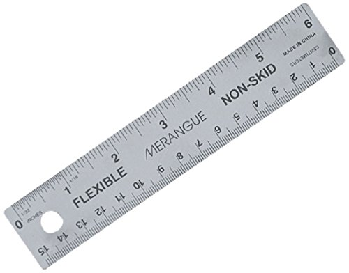WITH

Knife with blade's size #11(Recommended)
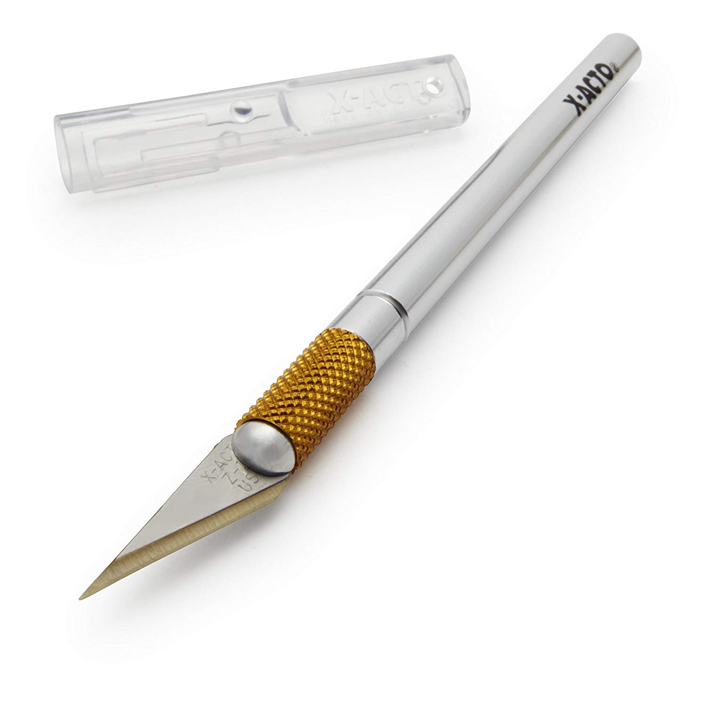
Cardstock paper
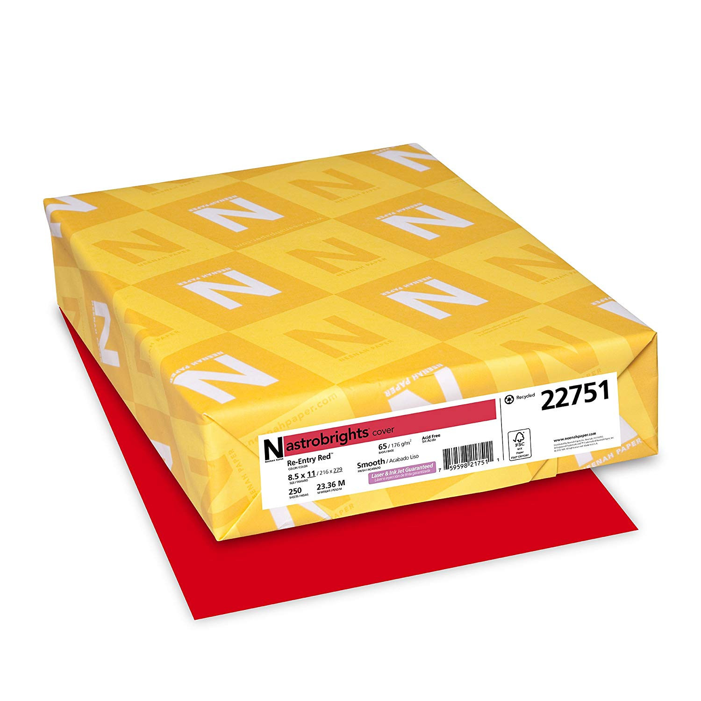Printer
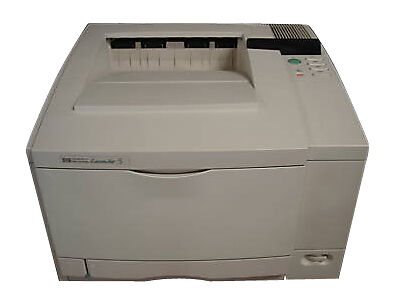Hi everyone, my name is Tan, but I preferred people to call me "Ken" because it's easier for them to call, remember and it sounds similar to my real name. I had one hobby that I usually do. I like to do KIRIGAMI, which people knew as paper cutting. It is another part of Japan's Paper Art. Most people knew ORIGAMI (folding paper).
I only do this when I have free time, and I don't always buy a gift to I give out when there are a birthday, or graduation. I made these kinds of stuff and give it to them as a present because it is meaningful between us. I really enjoy doing this because it helped me build some helpful personalities, which I could use for school as well as life.
such as:
Besides enjoying doing this, I also like to go to gym whenever I felt bored and stress after studying for hours
The example images of the hobby that I have taken by myself and the images from the Internet related to my hobby.
This Kirigami has 4 different types of pattern, there are:
Artist: RIU
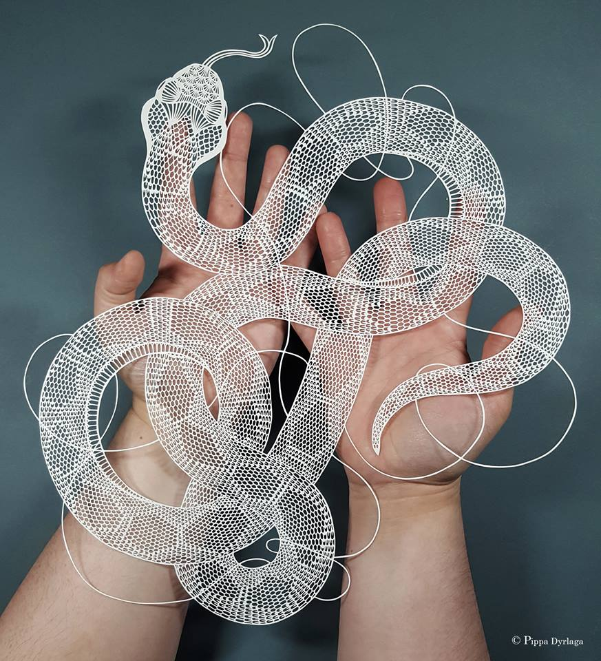Artist: Pippa Dyrlaga Papercutting Artist
My Product
My Product
Kirigami Club
Ferris Wheel
Kirigami Club - London Bridge
** to get this 360, you have to cut piece by piece from this template
PDF pattern for how to cut and parts of this - Author_YeeCutting Matt (healable)
Ruler
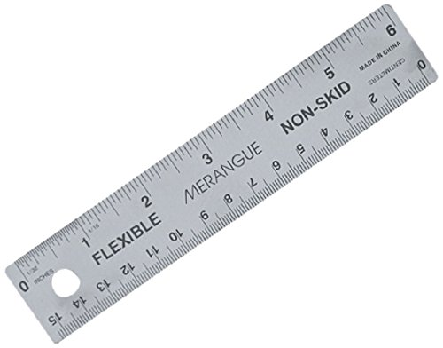WITH
Knife with blade's size #11(Recommended)
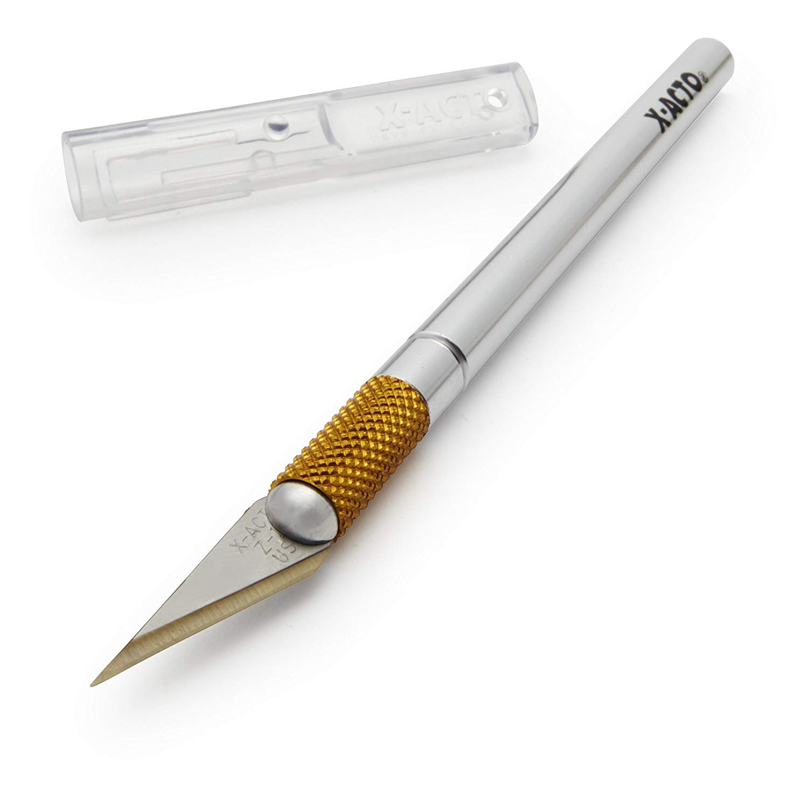
Cardstock paper
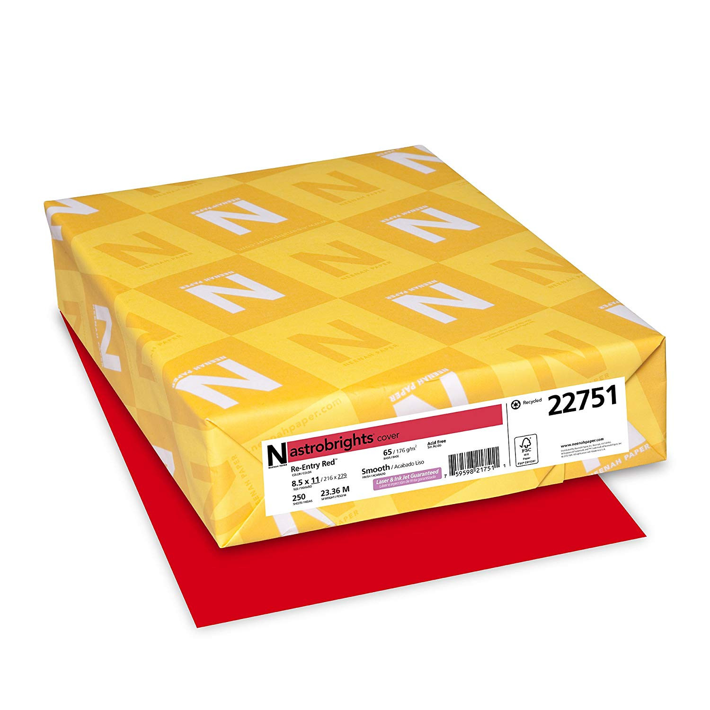Printer
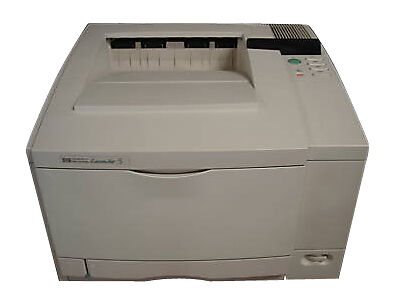
Source: http://ullagami.com/how-to.php
Temple
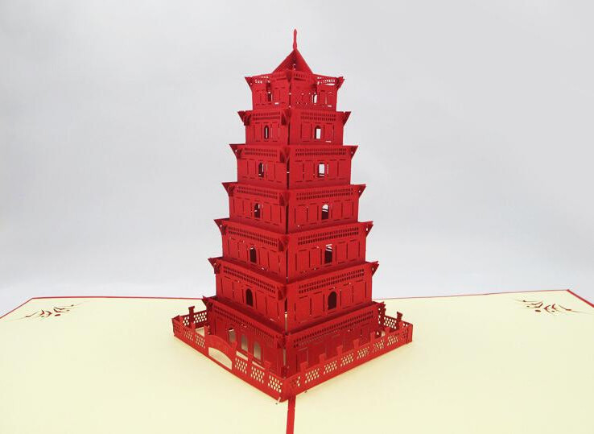 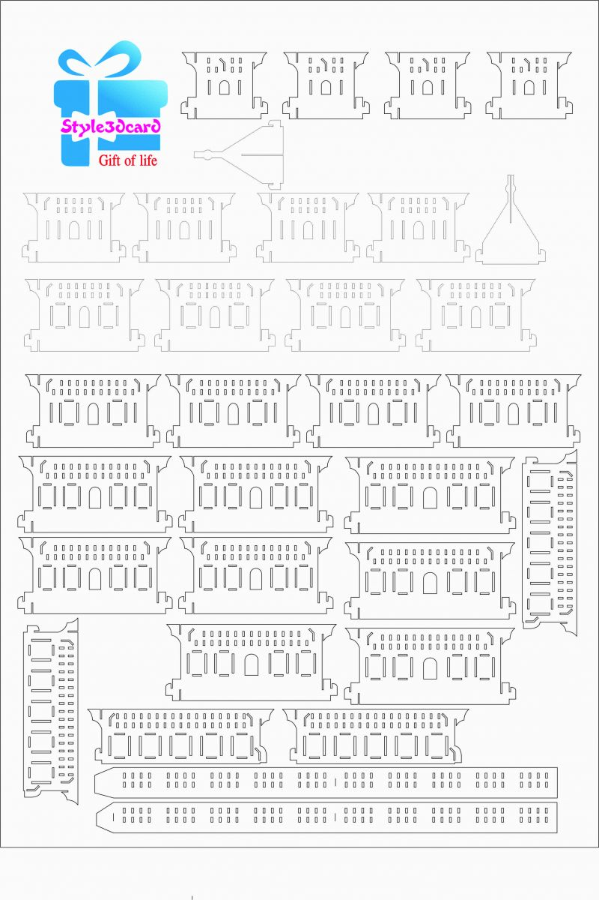This Is My Products:
Click Here Go To Kirigami Club's Photos
Once finish cutting all the pieces, the next step you will have to do is to connect them; however connecting is hard, if you accidentally tear it, you have to cut that part again.